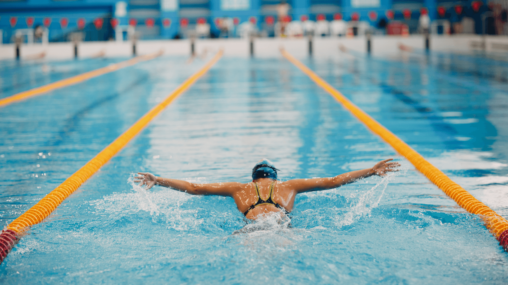

Como entrenar natacion al empezar
En natacion es mejor empezar por la tecnica. Si mejoras la posicion del cuerpo, la brazada y la respiracion, avanzas mas con menos esfuerzo.
Una sesion simple puede ser: 200 metros suaves, despues ejercicios de tecnica y al final algunas series cortas a ritmo medio. Con dos dias de agua por semana ya se nota progreso.